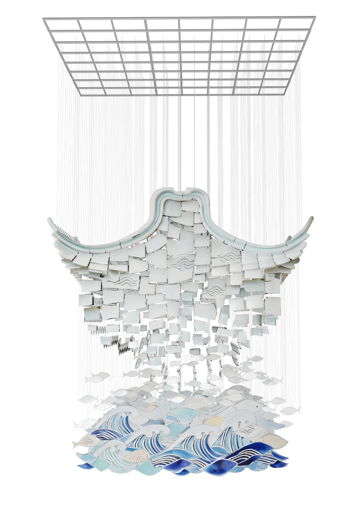

空间约束
把地面动线与客流作为设计前提，而非在完成造型后补充考虑。
CONTEXT
机场点位客流量大、地面空间受限，而扶梯上方的挑空区域尚未充分利用。公共艺术需要适应通行动线，并具有地域文化辨识度。
CHALLENGE
如何在不占用地面通行空间的前提下，形成远距离可识别、兼具文化层次的公共艺术方案？
MY ROLE
分析机场点位与通行需求，构建文化概念与悬吊结构方案，完成造型、材质、灯光及场景效果表达。
THINKING & CONTENT ARCHITECTURE
把地面动线与客流作为设计前提，而非在完成造型后补充考虑。
以多层级悬吊结构利用挑空区域，减少对机场地面活动的影响。
以瓷、厝、听、潮组织形式、材料和感官体验，讲述“厝与海共生”。
01 / SITE & STRATEGY
分析客流、地面动线和扶梯上方的空间条件，选择多层级悬吊结构。通过上部建筑轮廓、瓷片及下部海浪层次，最大化利用垂直空间。
02 / CULTURAL CONCEPT
以闽南“厝与海”的千年共生为灵感，将建筑符号、海洋文化与德化非遗瓷艺融入悬吊装置。
移动鼠标，感受轻晃；点击装置上的四处标记，探索文化与功能。

03 / MATERIAL & LIGHT
蓝色与青绿色釉色连接海洋意象，瓷片山海纹丰富细节与透光效果。方案采用 LED 点光源与灯带结合的内透照明，线路考虑隐蔽、安全与维护。以下均为设计效果图。
横向浏览不同视角 · 点击查看完整效果图
RESULT
厦门翔安国际机场人文公共艺术设计竞赛 · 国家级入围奖